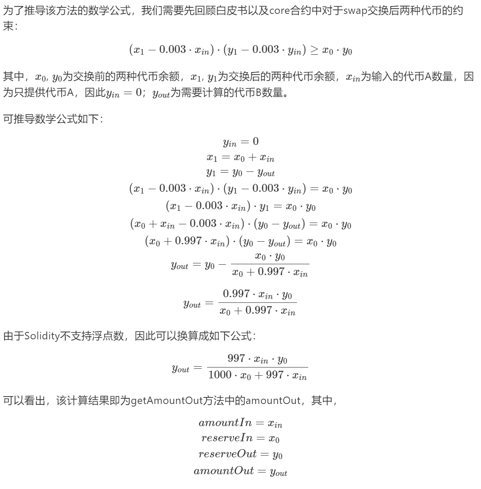
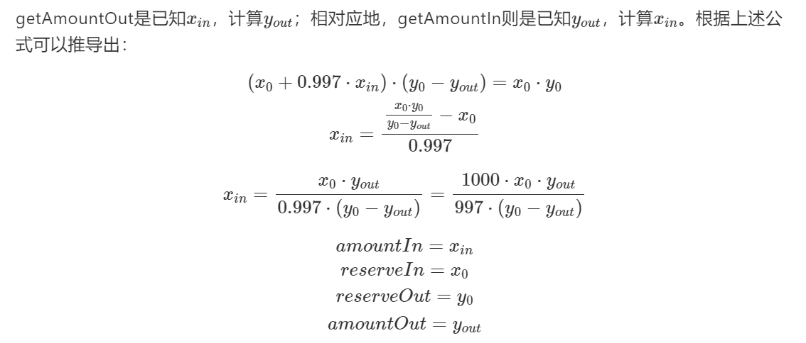

UniswapV2合约
深入理解 Uniswap v2 合约代码
来源：https://hackmd.io/@adshao/rk7nI-EG9
合约架构：
Unsiwap-v2 合约主要分为两类：core 合约和 periphery 合约。其中 ，core 合约仅包含最基础的交易功能，核心代码仅 200 行左右，由于用户资金都存储在 core 合约中，因此需要保证 core 合约最简化，避免引入 bug；periphery 合约则针对用户使用场景提供多种封装方法，比如支持原生 ETH 交易（自动转为 WETH），多路径交换（一个方法同时执行 A-> B -> C 交易）等，其底层调用的是 core 合约，我们在app.uniswap.org界面操作时用的就是periphery合约。

首先介绍几个主要合约的功能：
- uniswap-v2-core
- UniswapV2Factory：工厂合约，用于创建 Pair 合约（以及设置协议手续费接收地址）
- UniswapV2Pair：Pair（交易对）合约，定义和交易有关的几个最基础方法，如：swap/mint/burn，价格预言机等功能，其本身是一个 ERC20 合约，继承 UniswapV2ERC20
- UniswapV2ERC20：实现 ERC20 标准方法
- uniswap-v2-periphery
- UniswapV2Router02：最新版的路由合约，相比 UniswapV2Rounter01 增加了对 FeeOnTransfer 代币的支持；实现 Uniswap-v2 最常用的接口，比如添加/移出流动性，使用代币 A 兑换代币 B，使用 ETH 交换代币等
- UniswapV1Rount01：旧版本 Rounter 实现，与 Rounter02 类似，但不支持 FeeOnTransferTokens，目前已不使用
Uniswap-v2-core
UniswapV2Factory
在工厂合约最重要的是 createPair 方法：
function createPair(address tokenA, address tokenB) external returns (address pair) {
require(tokenA != tokenB, "UniswapV2: IDENTICAL_ADDRESS");
(address token0, address token1) = tokenA < tokenB ? (tokenA, tokenB) : (tokenB, tokenA);
require(token0 != address(0), 'UniswapV2: ZERO_ADDRESS');
require(getPair[token0][token1] == address(0), "UniswapV2: PAIR_EXISTS");
bytes memory bytecode = type(UniswapV2Pair).creationCode;
bytes32 salt = keccak256(abi.encodePacked(token0, token1));
assembly {
pair := create2(0, add(bytecode, 32), mload(bytecode), salt)
}
IUniswapV2Pair(pair).initialize(token0, token1);
getPair[token0][token1] = pair;
getPair[token1][token0] = pair; // populate mapping in the reverse direction
allPairs.push(pair);
emit PairCreated(token0, token1, pair, allPairs.length);
}首先将 token0 和 token1 按照顺序排序，确保 token0 字面地址小于 token1。接着使用 assembly + create2 创建合约。assembly可以在 Solidity 中使用 Yul 语言直接操作 EVM，是较底层的操作方法。create2 主要用于创建确定性的交易对合约地址，目的是根据两个代币地址直接计算 pair 地址，而无需调用链上合约查询
根据 CREATE2 的 EIP-1014 规范，在这里影响最终生成合约地址的是用户自定义的 salt。对于同一个交易对的两种代币，其 salt 值应该是一样的，通俗规定，通过交易对的两种代币的地址直接计算出 salt 值，而生成 salt 值又受到两种代币地址的先后顺序的影响，因此在合约开始时，先对两种代币进行排序，确保其按照从小到大的顺序生成 salt 值。
在最新版的 EVM 中，已经支持给 new 方法传递 salt 参数：
pair = new UniswapV2Pair{sa;t: salt}();因为 Uniswap-v2 合约在开发时还没有这个功能，所以使用 assembly create2。
根据Yul规范，create2 的定义如下：
create2(v, p, n, s)
create new contract with code mem[p…(p+n)) at address keccak256(0xff . this . s . keccak256(mem[p…(p+n))) and send v wei and return the new address, where 0xff is a 1 byte value, this is the current contract’s address as a 20 byte value and s is a big-endian 256-bit value; returns 0 on error
源码中调用create2方法：
pair := create2(0, add(bytecode, 32), mload(bytecode), salt)因此，这几个参数含义如下：
v=0：向新创建的pair合约中发送的ETH代币数量（单位wei）
p=add(bytecode, 32)：合约字节码的起始位置
此处为什么要add 32呢？因为bytecode类型为bytes，根据ABI规范，bytes为变长类型，在编码时前32个字节存储bytecode的长度，接着才是bytecode的真正内容，因此合约字节码的起始位置在bytecode+32字节
n=mload(bytecode)：合约字节码总字节长度
根据上述说明，bytecode前32个字节存储合约字节码的真正长度（以字节为单位），而mload的作用正是读出传入参数的前32个字节的值，因此mload(bytecode)就等于n
s=salt：s为自定义传入的salt，即token0和token1合并编码
UniswapV2ERC20
这个合约主要定义了 UniswapV2 的 ERC20 标准实现，代码比较简单。下面介绍 permit 方法：
function permit(address owner, address spender, uint value, uint deadline, uint8 v, bytes32 r, bytes32 s) external {
require(deadline > block.timestamp, 'UniswapV2: EXPIRED');
bytes32 digest = keccak256(
abi.encodePacked(
'\x19\x01',
DOMAIN_SEPARATOR,
keccak256(abi.encode(PERMIT_TYPEHASH, owner, spender, value, nonces[owner]++, deadline))
)
);
address recoveredAddress = ecrecover(digest, v, r, s);
require(recoverAddress != address(0) && recoveredAddress == owner, 'UniswapV2: INVALID_SIGNATURE');
_approve(owner, spender, value);
}permit方法实现的就是白皮书2.5节中介绍的“Meta transactions for pool shares 元交易”功能。EIP-712定义了离线签名的规范，即digest的格式定义，用户签名的内容是其（owner）授权（approve）某个合约（spender）可以在截止时间（deadline）之前花掉一定数量（value）的代币（Pair流动性代币），应用（periphery合约）拿着签名的原始信息和签名后生成的v, r, s，可以调用Pair合约的permit方法获得授权，permit 方法使用 ecrecover 还原出签名地址为代币所有人，验证通过则批准授权。
UniswapV2Pair
Pair 合约主要实现了三个方法：mint（添加流动性）、burn（移出流动性）、swap（兑换）。
mint-实现添加流动性功能
该方法实现添加流动性功能：
// this low-level function should be called from a contract which performs important safety checks
function mint(address to) external lock returns (uint liquidity) {
(uint112 _reserve0, uint112 _reserve1, ) = getReserves(); // gas savings
uint balance0 = IERC20(token0).balanceOf(address(this));
uint balance1 = IERC20(token1).balanceOf(address(this));
uint amount0 = balance0.sub(_reserve0);
uint amount1 = balance1.sub(_reserve1);
bool feeOn = _mintFee(_reserve0, _resverve1); // 计算协议手续费
uint _totalSupply = totalSupply; // gas savings, must be define here since totalSupply can update in _mintFee
if (_totalSupply == 0) {
liquidity = Math.sqrt(amount0.mul(amount1)).sub(MINIMUM_LIQUIDITY);
_mint(address(0), MINTMUM_LIQUIDITY); // permanently lock the first MINIMUM_LIQUIDITY tokens
} else {
liquidity = Math.min(amount0.mul(_totalSupply) / _reserve0, amount1.mul(_totalSupply) / _reserve1);
}
require(liquidity > 0, 'UniswapV2: INSUFFICIENT_LIQUIDITY_MINTED');
_mint(to, liquidity);
_update(balance0, balance1, _reserve0, _reserve1);
if (feeOn) kLast = uint(reserve0).mul(reserve1); // reserve0 and reserve1 are up-to-date
emit Mint(msg.sender, amount0, amount1);
}首先，getReserves()获取两种代币的缓存余额（函数内第一行），在白皮书中提到，保存缓存余额是为了防止攻击者操控价格预言机。此处还用于计算协议手续费，并通过当前余额与缓存余额获取转账的代币数量。
_mintFee用于计算协议手续费：
// if fee is on, mint liquidity equivalent to 1/6th of the growth in sqrt(k)
function _mintFee(uint112 _reserve0, uint112 _reserve1) private returns (bool feeOn) {
address feeTo = IUniswapV2Factory(factory).feeTo();
feeOn = feeTo != address(0);
uint _kLast = kLast; // gas savings
if (feeOn) {
if (_kLast != 0) {
uint rootK = Math.sqrt(uint(_reserve0).mul(_reserve1));
uint rootKLast = Math.sqrt(_kLast);
if (rootK > rootKLast) {
uint numerator = totalSupply.mul(rootK.sub(rootKLast));
uint denominator = rootK.mul(5).add(rootKLast);
uint liquidity = numerator / denominator;
if (liquidity > 0) _mint(feeTo, liquidity);
}
}
} else if (_kLast != 0) {
kLast = 0;
}
}关于协议手续费的计算公式可以参考白皮书。
mint 方法中判断，如果是首次提供该交易对的流动性，则根据根号 xy 生成流动性代币，并销毁其中的 MINIMUM_LIQUIDITY（即1000 wei ）；否则根据转入的代币价值与当前流动性价值比例铸造流动性代币。
burn-实现移除流动性功能
该方法实现移除流动性功能：
// this low-level function should be called from a contract which contract which performs important safety checks
function burn(address to) external lock returns(uint amount0, uint amount1) {
(uint112 _reserve0, uint112 _reserve1, ) = getReserves(); //gas savings
address _token0 = token0;
address _token1 = token1;
uint balance0 = IERC20(_token0).balanceOf(address(this));
uint balance1 = IERC20(_token1).balanceOf(address(this));
uint liquidity = balanceOf[address(this)];
bool feeOn = _mintFee(_reserve0, _reserve1);
uint _totalSupply = totalSupply; // gas savings, must be define here since totalSupply can uodate in _mintFee
amount0 = liquidity.mul(balance0) / _totalSupply; // using balances ensure pro-rate distribution
amount1 = liquidity.mul(balance1) / _totalSupply; // using balances ensure pro-rate distribution
require(amount0 > 0 && amount1 > 0,'UniswapV2: INSUFFICIENT_LIQUIDITY_BURNED');
_burn(address(this), liquidity);
_safeTransfer(_token0, to, amount0);
_safeTransfer(_token1, to, amount1);
balance0 = IERC20(_token0).balanceOf(address(this));
balance1 = IERC20(_token1).balanceOf(address(this));
_update(balance0, balance1, _reserve0, _reserve1);
if (feeOn) kLast = uint(reserve0).mul(reserve1); // reserve0 and reserbe1 are up-to-date
emit Burn(msg.sender, amount0, amount1, to);
}与 mint 类似，burn 方法也会先计算协议手续费
参考白皮书，为了节省交易手续费，Uniswap v2 只在 mint/burn 流动性时收取累计的协议手续费。
移出流动性后，根据销毁的流动性代币占总量的比例获得对应的两种代币。
swap-实现两种代币的交换（交易）功能
该方法实现两种代币的交换（交易）功能。
// this low-level function should be called from a contract which performs important safety checks
function swap(uint amount0Out, uint amount1Out, address to, bytes calldata data) external lock {
require(amount0Out > 0 || amount1Out > 0, 'UniswapV2: INSUFFICIENT_OUTPUT_AMOUNT');
(uint112 _reserve0, uint112 _reserve1,) = getReserves(); // gas savings
require(amount0Out < _reserve0 && amount1Out < _reserve1, 'UnsiwapV2: INSUFFICIENT_LIQUIDITY');
uint balance0;
uint balance1;
{ // scope for _token{0, 1}, avoids stack too deep errors
address _token0 = token0;
address _token1 = token1;
require(to != _token0 && to != _token1,'Uniswap: INVALID_TO');
if (amount0Out > 0) _safeTransfer(_token0, to, amount0Out);
if (amount1Out > 0) _safeTransfer(_token1, to, amount1Out);
if (data.length > 0) IUniswapV2Callee(to).uniswapV2Call(msg.sender, amount0Out, amount1Out, data);
balance0 = IERC20(_token0).balanceOf(address(this));
balance1 = IERC20(_token1).balanceOf(address(this));
}
uint amount0In = balance0 > _reserve0 - amount0Out ? balance0 - (_reserve0 - amount0Out) : 0;
uint amount1In = balance1 > _reserve1 - amount1Out ? balance1 - (_reserve1 - amount1Out) : 0;
require(amount0In > 0 || amount1In > 0, 'UniswapV2: INSUFFICIENT_INPUT_AMOUNT');
{ // scope for reserve{0, 1}Adjusted, avoids stacj too deep errors
uint balance0Adjusted = balance0.mul(1000).sub(amount0In.mul(3));
uint balance1Adjusted = balance1.mul(1000).sub(amount0In.mul(3));
require(balance0Adjusted.mul(balance1Adjusted) >= uint(_reserve0).mul(_reserve1).mul(1000**2), 'UniswapV2: K');
}
_update(balance0, balance1, _reserve0, _reserve1);
emit Swap(msg.sender, amount0In, amount1In, amount0Out, amount1Out, to);
}为了兼容闪电贷功能，以及不依赖特定代币的 transfer 方法，整个 swap 方法并没有类型 amountln 的参数，而是通过比较当前余额与缓存余额的差值来得出转入的代币数量。
由于在 swap 方法最后会检查余额（扣掉手续费后）符合 k 常量函数约束（参考白皮书公式），因此合约可以先将用户希望获得的代币转出，如果用户之前并没有向合约转入用于交易的代币，则相当于借币（即：闪电贷）；如果使用闪电贷，则需要在自定义的 uniswapV2Call 方法中将借出的代币归还。
在 swap 方法最后会使用缓存余额更新价格预言机所需的累计价格，最后更新缓存余额为当前余额。
_update更新缓存余额
// update reserves and, on first call per block, price accumulators
function _update(uint balance0, uint balance1, uint112 _reserve0, uint112 _reserve1) private {
require(balance0 <= uint112(-1) && balance1 <= uint112(-1), 'UniswapV2: OVERFLOW');
uint32 blockTimestamp = uint32(block.timestamp % 2** 32);
uint32 timeElapsed = blockTimestamp - blockTimestampLast; // overflow is desired
if(timeElapsed > 0 && reserve0 != 0 && _reserve1 != 0) {
price0CumulativeLast += uint(UQ112x112.encode(_reserve1).uqdiv(_reserve0)) * timeElapsed;
price1CumulativeLast += uint(UQ112x112.encode(_reserve0).uqdiv(_reserve1)) * timeElapsed;
}
reserve0 = uint112(balance0);
reserve1 = uint112(balance1);
blockTimestampLast = blockTimestamp;
emit Sync(reserve0, reserve1);
}主要，其中区块时间戳和累计价格都是溢出安全的。（具体推导过程参考白皮书）
UniswapV2Router02
Router02 封装了最常用的几个交易接口；为了满足原生 ETH 交易需求，大部分接口都支持 ETH 版本；同，相比 Router01，部分接口增加了 FeeOnTransferTokens 的支持。

接下来主要研究 ERC20 版本的代码，因为 ETH 版本只是将 ETH 和 WETH 做转换，逻辑与 ERC20 一致。
首先先了解 Library 合约中的几个常用方法，以及它们的数学公式推导。
Library
pairFor-计算两个代币的交易对地址
// calculates the CREATE2 address for a pair without making any external calls
function pairFor(address factory, address tokenA, address tokenB) internal pure returns (address pair) {
(address token0, address token1) = sortTokens(tokenA, tokenB);
pair = address(uint(keccak(abi.encodePacked(
hex'ff',
factory,
keccak256(abi.encodePacked(token0, token1)),
hex'96e8ac4277198ff8b6f785478aa9a39f403cb768dd02cbee326c3e7da348845f' // init code hash
))));
}上文提到，由于使用 CREATE2 操作码，交易对地址可以直接根据规范算出，而无需调用链上合约进行查询。
create2(v, p, n, s)
create new contract with code mem[p…(p+n)) at address keccak256(0xff . this . s . keccak256(mem[p…(p+n))) and send v wei and return the new address, where 0xff is a 1 byte value, this is the current contract’s address as a 20 byte value and s is a big-endian 256-bit value; returns 0 on error
其中，新创建的 pair 合约的地址计算方法为：keccak256(0xff + this + salt + keccak256(mem[p…(p+n)))：
- this：工厂合约地址
- salt：
keccak256(abi,encodePacked(token0, token1)) keccak256(mem[p…(p+n))： 0x96e8ac4277198ff8b6f785478aa9a39f403cb768dd02cbee326c3e7da348845f
由于每个交易对都使用 UniswapV2Pair 合约创建，init code hash 都是一样的。我们可以在 UniswapV2Factory 写一个 Solidity 方法计算 hash：
function initCodeHash() external returns (bytes32) {
bytes memory bytecode = type(UniswapV2Pair).creationCode;
bytes32 hash;
assembly {
hash := keccak256(add(bytecode, 32), mload(bytecode))
}
return hash;
}quote-两个代币之间计价单位转换
quote 方法将数量为 amountA 的代币 A，按照合约中两种代币余额比例，换算成另一个代币 B。此时不考虑手续费，因为仅是计价单位的换算。
// given some amount of an asset and pair reserves, returns an equivalent amount of the other asset
function quote(uint amountA, uint reserveA, uint reserveB) internal pure returns (uint amountB) {
require(amountA > 0, 'UniswapV2Library: INSUFFICIENT_AMOUNT');
require(reserveA > 0 && reserveB > 0, 'UniswapV2Library: INSUFFICIENT_LIQUDITY');
amountB = amountA.mul(reserveB) / reserveA;
}getAmountOut
该方法计算：输入一定数量（amountIn）代币 A，根据池子中代币余额，能得到多少数量（amountOut）代币B。
// give an input amount an asset and pair reserves, returns the maximum output amout of the other asset
function getAmountOut(uint amountIn, uint reserveIn, uint reserveOut) internal pure returns (uint amountOut) {
require(amountIn > 0, 'UniswapV2Library: INSUFFICIENT_INPUT_AMOUNT');
require(reserveIn > 0 && reserveOut > 0, 'UniswapV2Library: INSUFFICIENT_LIQUIDITY');
uint amountInWithFee = amountIn.mul(997);
uint numerator = amountInWithFee.mul(reserveOut);
uint denominator = reserveIn.mul(1000).add(amountInWithFee);
amountOut = numerator / denominator;
}该方法的数学公式如下：

getAmountIn
该方法计算当希望获得一定数量（amountOut）的代币 B 是，应该输入多少数量（amountIn）的代币 A。
// given an output amount of an asset and pair reserves, returns a require input amount of the other asset
function getAmountIn(uint amountOut, uint reserveIn, uint reserveOut) internal pure returns (uint amountIn) {
require(amountOut > 0, 'UniswapV2Library: INSUFFICIENT_OUTPUT_AMOUNT');
require(reserveIn > 0 && reserveOut > 0, 'UniswapV2Library: INSUFFICIENT_LIQUIDITY');
uint numerator = reserveIn.mul(amountOut).mul(1000);
uint denominator = reserveOut.sub(amountOut).mul(997);
amountIn = (numerator / denominator).add(1);
}
计算结果即为合约中代码所示，注意最后有一个add(1)，这是为了防止 amountIn 为小鼠的情况，加 1 可以保证输入的数（amountIn）不小于理论的最小值。
getAmountsOut
该方法用于计算在使用多个交易对时，输入一定数量（amountIn）的第一种代币，最终能收到多少数量的最后一种代币（amounts）。amounts 数组中的第一个元素表示 amountIn，最后一个元素表示该目标代币对应的数量。该方法实际上时循环调用 getAmountIn 方法。
// performs chained getAmountOut calculations on any number of pairs
function getAmountsOut(address factory, uint amountIn, address[] memory path) internal view returns(uint[] memory amounts) {
require(path.length >= 2, 'UniswapV2Library: INVALID_PATH');
amounts = new uint[](path.length);
amounts[0] = amountIn;
for (uint i; i < path.length - 1; i++) {
(uint reserveIn, uint reserveOut) = getReserves(factory, path[i], path[i+1]);
amounts[i + 1] = getAmountOut(amounts[i], reserveIn, reserveOut);
}
}getAmountsIn
与 getAmountsOut 相对，getAmountsIn 用于计算当希望收到一定数量（amountOut）的目标代笔，应该分别输入多少数量的中间代币。计算方法也是循环调用 getAmountIn。
// performs chained getAmountIn calculations on any number of paids
function getAmountsIn(address factory, uint amountOut, address[] memory path) internal view returns(uint[] memory amounts) {
require(path.length >= 2, 'UniswapV2Library: INVALID_PATH');
amounts = new uint[](path.length);
amounts[amounts.length - 1] = amountOut;
for(uint i = path.length - 1; i > 0; i--) {
(uint reserveIn, uint reserveOut) = getReserves(factory, path[i - 1], path[i]);
amounts[i - 1] = getAmountIn(amounts[i], reserveIn, reserveOut);
}
}ERC20-ERC20
addLiquidity 添加流动性
function addLiquidity(
address tokenA,
address tokenB,
uint amountADesired,
uint amountBDesired,
uint amountAMin,
uint amountBMin,
address to,
uint deadline
) external virtual override ensure(deadline) returns(uint amountA, uint amountB, uint liquidity) {
(amountA, amountB) = _addLiquidity(tokenA, tokenB, amountADesired, amountBDesired, amountAMin, amountBMin);
address pair = UniswapV2Library.pariFor(factory, tokenA, tokenB);
TransferHelper.safeTransferFrom(tokenA, msg.sender, pair, amountA);
TransferHelper.safeTransferFrom(tokenB, msg.sender, pair, amountB);
liquidity = IUniswapV2Pair(pair).mint(to);
}由于Router02是直接与用户交互的，因此接口设计需要从用户使用场景考虑。addLiquidity提供了8个参数：
- address tokenA：代币A
- address tokenB：代币B
- uint amountADesired：希望存入的代币A数量
- uint amountBDesired：希望存入的代币B数量
- uint amountAMin：最少存入的代币A数量
- uint amountBMin：最少存入的代币B数量
- address to：流动性代币接收地址
- uint deadline：请求失效时间
用户提交交易后，该交易被矿工打包的时间是不确定的，因此提交时的代币价格与交易打包时的价格可能不同，通过amountMin可以控制价格的浮动范围，防止被矿工或机器人套利；同样，deadline可以确保该交易在超过指定时间后将失效。
在 core 合约中提到，如果用户提供流动性时的代币价格与实际价格有差距，则只会按照较低的汇率得到流动性代币，多余的代币将贡献给整个池子。_addLiquidity可以帮组计算最佳汇率。如果是首次添加流动性，则会创建交易对合约；否则根据当前池子余额计算应该注入的最佳代币数量。
_addLiquidity计算最佳汇率
// **** ADD LIQUIDITY ****
function _addLiquidity(
address tokenA,
address tokenB,
uint amountADesired,
uint amountBDesired,
uint amountAMin,
uint amountBmin
) internal virtual returns (uint amountA, uint amountB) {
// create the pair if it doesn't exist yet
if (IUniswapV2Factory(factory).getPair(tokenA, tokenB) == address(0)) {
IUniswapV2Factory(factory).createPair(tokenA, tokenB);
}
(uint reserveA, uint reserveB) = UniswapV2Library.getReserves(factory, tokenA, tokenB);
if(reserveA == 0 && reserveB == 0) {
(amountA, amountB) = (amountADesired, amountBDesired);
} else {
uint amountBOptimal = UniswapV2Library.getReserves(factory, tokenA, tokenB);
if (amountBOptimal <= amountBDesired) {
require(amountBOptimal >= amountBMin, 'UniswapV2Router: INSUFFICIENT_B_AMOUNT');
(amountA, amountB) = (amountADesired, amountBOptimal);
} else {
uint amountBOptimal = UniswapV2Library.quote(amountBDesired, reserveB, reserveA);
assert(amountAOptimal <= amountDesired);
require(amountA, amountB) = (amountAOptimal, amountBDesired);
}
}
}最后调用 core 合约 mint 方法铸造流动性代币。
removeLiquidity 移出流动性
首先将流动性代币发送到 pair 合约，根据收到的流动性代币占全部代币比例，计算该流动性代币的两种代币数量。合约销毁流动性代币后，用户将受到对应比例的代币。如果低于用户的设定的最低预期（amountAMin/amountBMin），则回滚交易。
// **** REMOVE LIQUIDITY ****
function removeLiquidity(
address tokenA,
address tokenB,
uint liquidity,
uint amountAMin,
uint amountBMin,
address to,
uint deadline
) public virtual override ensure(deadline) returns(uint amountA, uint amountB) {
address pair = UniswapV2Library.pairFor(factory, tokenA, tokenB);
IUniswapV2Pair(pair).transderFrom(msg.sender, pair, liquidity); // send liquidity to pair
(uint amount0, uint amount1) = IUniswapV2Pair(pair).burn(to);
(address token0, ) = UniswapV2Library.sortTokens(tokenA, tokenB);
(amountA, amountB) = tokenA == token0 ? (amount0, amount1) : (amount1, amount0);
require(amountA >= amountAMin, 'UniswapV2Router: INSUFFICIENT_A_AMOUNT');
require(amountB >= amountBMin, 'UniswapV2Router: INSUFFICIENT_B_AMOUNT');
}removeLiquidityWithPermit 使用签名移除流动性
用户正常移除流动性时，需要两个操作：
- approve：授权 Router 合约花费自己的流动性代币
- removeLiquidity：调用 Router 合约移除流动性
除非第一次授权了最大限额的代币，否则每次移除流动性都需要两次交互，这意味着用户需要支付两次手续费。而使用 removeLiquidityWithPermit 方法，用户可以通过签名方式授权 Router 合约花费自己的代币，无需单独调用 approve ，只需要调用一次移除流动性方法即可完成操作，节省了 gas 费用。同时，由于离线签名不需要花费 gas，因此可以每次签名仅授权一定额度的代币，提高安全性。
function removeLiquidityWithPermit(
address tokenA,
address tokenB,
uint liquidity,
uint amountAMin,
uint amountBMin,
address to,
uint deadline,
bool approveMax, uint8 v, bytes32 r, bytes32 s
) external virtual override returns(uint amountA, uint amountB) {
address pair = UniswapV2Library.pairFor(factory, tokenA, tokenB);
uint value = approveMax ? uint(-1) : liquidity;
IUniswapV2Pair(pair).permit(msg.sender, address(this), value, deadline, v, r, s);
(amountA, amountB) = removeLiquidity(tokenA, tokenB, liquidiry, amountAMin, amountBMin, to, deadline);
}swapExactTokensForTokens-根据指定的输入代币，获得最多的输出代币
交易时的两个常见场景：
- 使用指定数量的代币 A（输入），尽可能兑换最多数量的代币 B （输出）
- 获得指定数量的代币 B（输出），尽可能使用最少数量的代币 A （输入）
本方法实现了第一个场景，即根据指定的输入代币，获得最多的输出代币
function sawpExactTokensForTokens(
uint amountIn,
uint amountOutMin,
address[] calldata path,
address to,
uint deadline
) external virtual override ensure(deadline) returns (uint[] memory amounts) {
amounts = UniswapV2Library.getAmountsOut(factory, amountIn, path);
require(amounts[amounts.length -1] >= amountOutMin, 'UniswapV2Router: INSUFFICIENT_OUTPUT_AMOUNT');
TransferHelper.safeTransferFrom(
path[0], msg.sender, UniswapV2Library(factory, path[0], path[1]), amounts[0]
);
_swap(amounts, path, to);
}首先使用 Library 合约中的 getAmountsOut 方法，根据兑换路径计算每一次交易的输出代币数量，确认最后一次交易得到的数量(amounts[amounts.length - 1]) 不小于预期最少输出(amountOutMin)；将代币发送到第一个交易对地址，开始执行整个兑换交易。
假设用户希望使用 WETH 兑换 DYDX，链下计算的最佳兑换路径为 WETH -> USDC -> DYDX，则 amountIn 为 WETH 数量，amountOutMin 为希望获得最少 DYDX 数量， path 为 [WETH address, USDC address, DYDX address]，amounts 为[amountIn, USDC amount, DYDX amount]。在 _swap 执行交易的过程中，每次中间交易获得的中间代币将被发送到下一个交易对地址，以此类推，直到最后一个交易完成，_to地址将收到最后一次交易的输入代币。
_swap
// requires the initial amount to have already been sent to the first pair
function _swap(uint[] memory amounts, address[] memory path, address _to) internal virtual {
for (uint o; i < path.length - 1; i++) {
(address input, address output) = (path[i], path[i+1]);
(address token0,) = UniswapV2Library.sortRokens(input, output);
uint amountOut = amounts[i + 1];
(uint amount0Out, uint amount1Out) = input == token0 ? (uint(0), amountOut) : (amountOut, uint(0));
address to = i < path.length - 2 ? UniswapV2Library.pairFor(factory, output, path[i + 2]) : _to;
IUniswapV2Pair(UniswapV2Library.pairFor(factory, input, output)).swap(
amount0Out, amount1Out, to, new bytes(0)
);
}
}swapTokensForExactTokens-根据指定的输入代币使用最少的输入代币完成兑换
该方法实现交易的第二个场景，根据指定的输入代币，使用最少的输入代币完成兑换。
function swapTokensForExactTokens(
uint amountOut,
uint amountInMax,
address[] calldata path,
address to,
uint deadline
) external virtual override ensure(deadline) returns (uint[] memory amounts) {
amounts = UniswapV2Library.getAmountsIn(factory, amountOut, path);
require(amounts[0] <= amountInMax, 'UniswapV2Router: EXCESSIVE_INPUT_AMOUNT');
TransferHelper.safeTransferFrom(
path[0], msg.sender, UniswapV2Library.pairFor(factory, path[0], path[1]) amounts[0]
);
_swap(amounts, path, to);
}与上面类似，这里先使用Library的getAmountsIn方法反向计算每一次兑换所需的最少输入代币数量，确认计算得出的（扣除手续费后）第一个代币所需的最少代币数不大于用户愿意提供的最大代币数（amountInMax）；将代币发送到第一个交易对地址，调用_swap开始执行整个兑换交易。
ERC20_ETH
ETH Support
由于 core 合约只支持 ERC20 代币支付，为了支持 ETH 交易，periphery 合约需要将 ETH 与 WETH 做转换；并为大部分方法提供了 ETH 版本，兑换主要这几两种操作：
- 地址转换：由于 ETH 没有合约地址，因此需要使用 WETH 合约的 deposit 和 withdraw 方法完成 ETH 和 WETH 的兑换
- 代币数量转换：ETH代币需要通过 msg.value 获取，可根据该值计算对应的 WETH 数量，而后使用标准 ERC20 接口即可。
FeeOnTransferTokens
由于某些代币会在转账（transfer）过程中收取手续费，转账数量与实际收到的数量有差异，因此无法直接通过计算得出中间兑换过程中所需的代币数量，此时应该通过balanceOf方法（而非transfer方法）判断实际收到的代币数量。Router02新增了对Inclusive Fee On Transfer Tokens的支持，更具体说明可以参考官方文档。